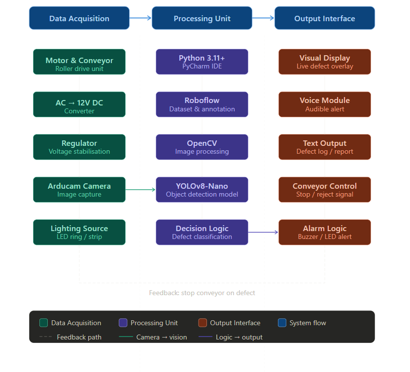
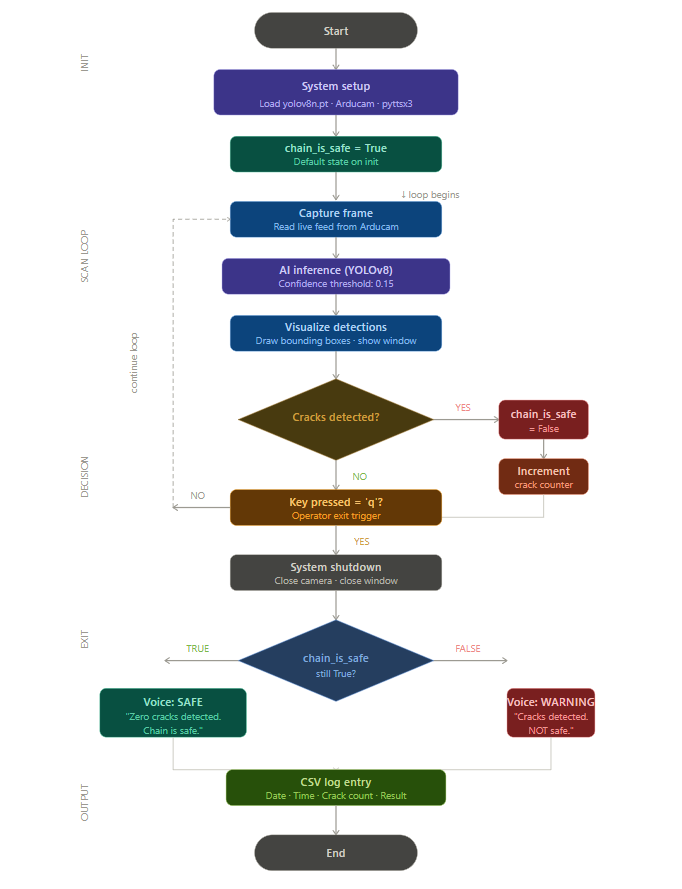
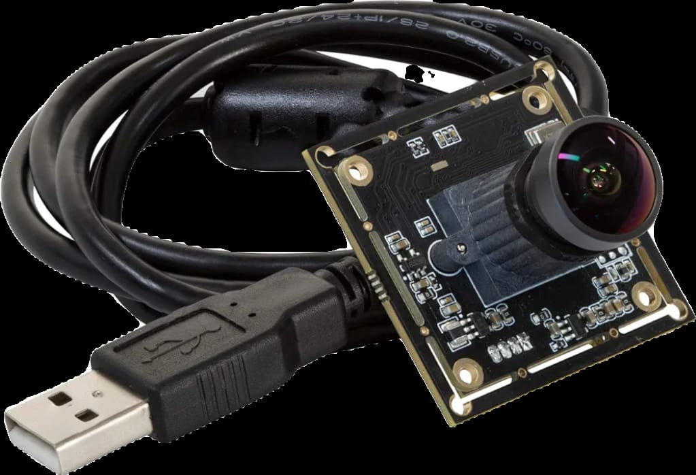
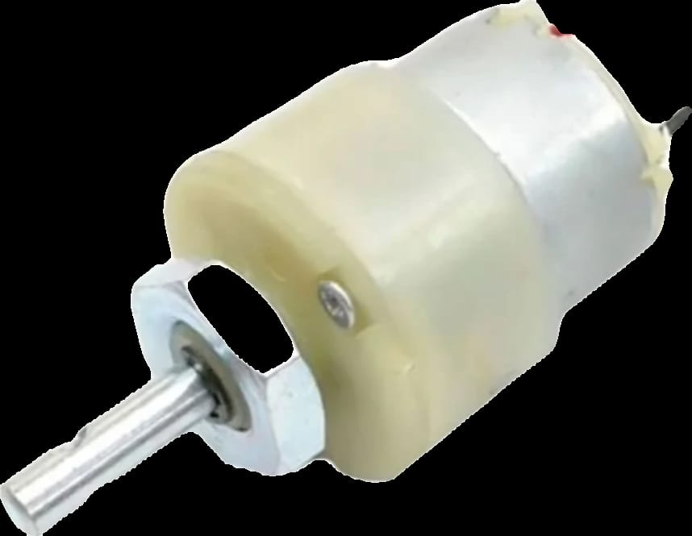
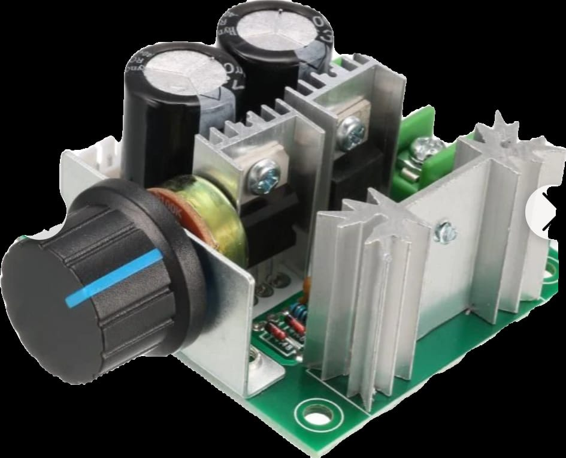
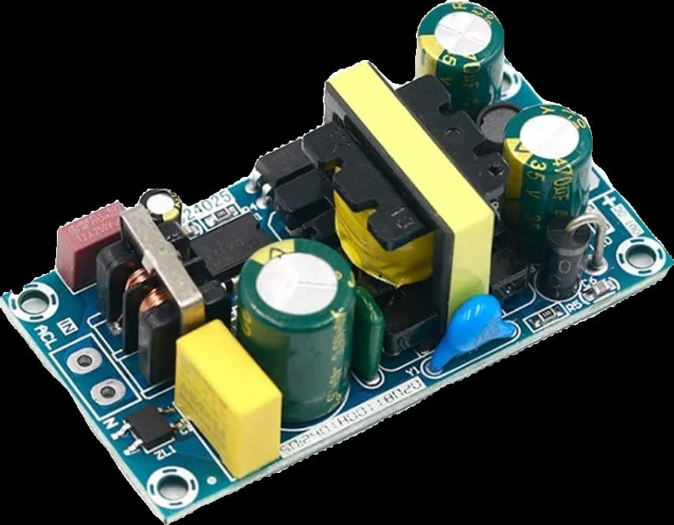
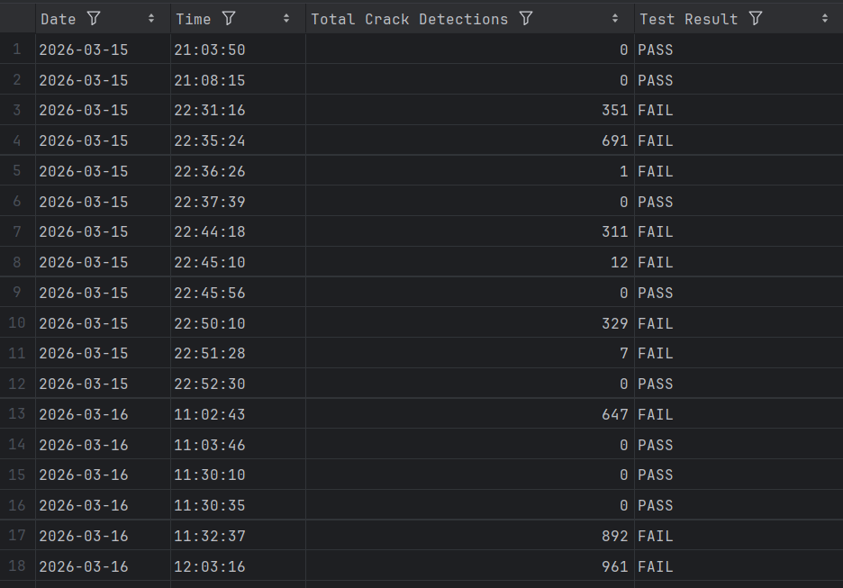

The Problem
Industrial metal chains are critical components in manufacturing. Operating under continuous stress, they are vulnerable to surface cracking. Manual inspection is time-consuming, prone to error, and often misses micro-cracks on high-speed lines.
The objective was to design a non-contact, automated vision system capable of inspecting interlocked metal chains in real-time to prevent catastrophic failure.
Architecture & Hardware



Arducam 5MP

Geared Motor

PWM Control

12V SMPS
Results & Video Demo
